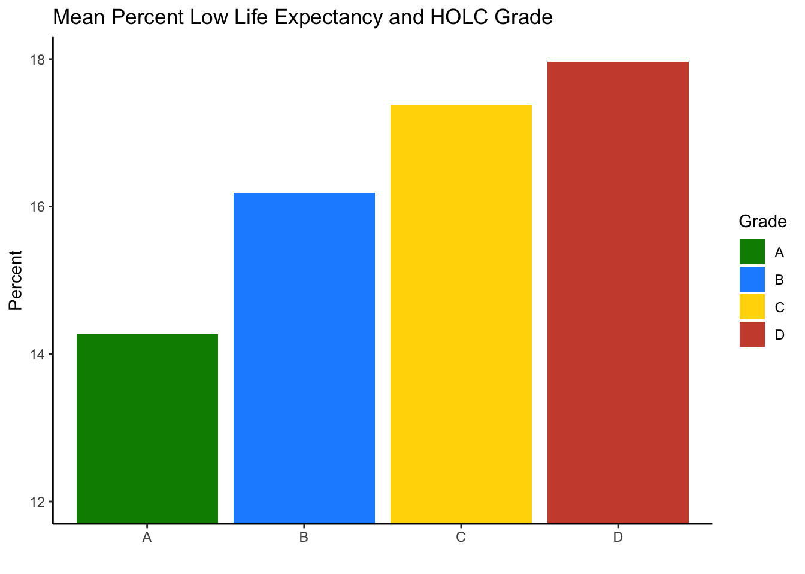
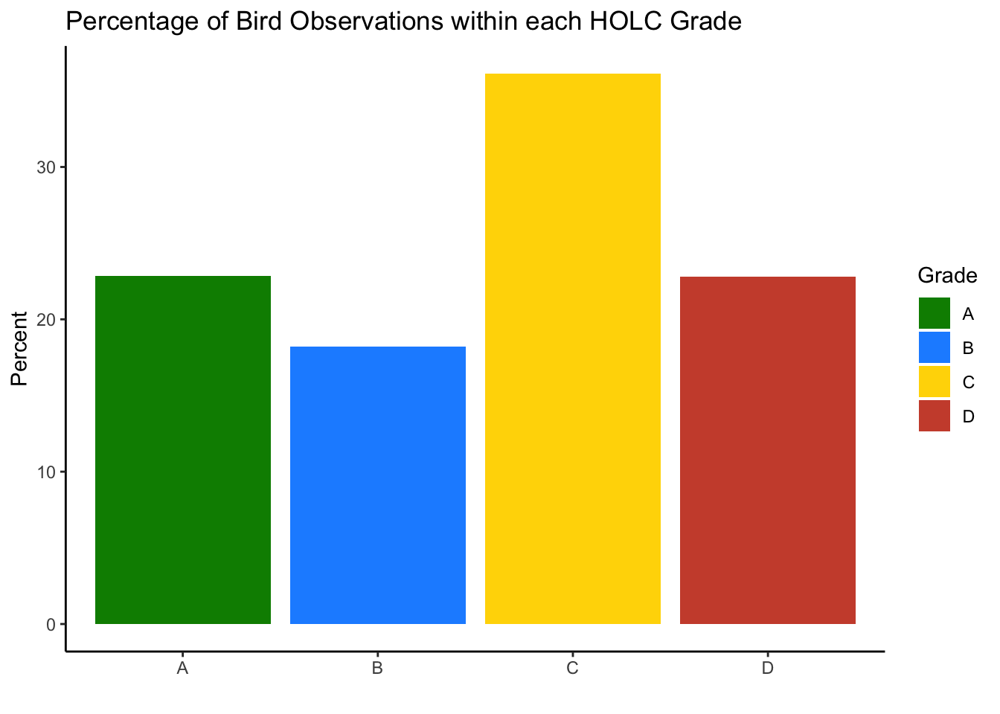

library(tidyverse)
library(janitor)
library(sf)
library(tmap)
library(kableExtra)
library(patchwork)Homework 2
Part 1. Legacy of redlining in current environmental (in)justice
Import necessary packages
Data Import
Import EJ screen, redlining, and bird data
# Import HOLC Redlining data
redline <- st_read(here::here("data", "mapping-inequality", "mapping-inequality-los-angeles.json"))
# Import bird biodiversity observations dataset
birds <- st_read(here::here("data", "gbif-birds-LA", "gbif-birds-LA.shp"))
ejscreen <- sf::st_read(here::here("data", "ejscreen","EJSCREEN_2023_BG_StatePct_with_AS_CNMI_GU_VI.gdb")) # Check that redline data and ej screen data have the same CRS
st_crs(redline) == st_crs(ejscreen)[1] FALSE# Transform CRS redline data to CRS of ej screen
redline_transform <- st_transform(redline, crs = st_crs(ejscreen))
# Using if-else statements to verify match
if(st_crs(redline_transform) == st_crs(ejscreen)){
print("Match")
} else {
print("Not a match")
}[1] "Match"1. Map of Historical Redlining Neighborhoods
# Select only LA county for basemap
ej_la <- ejscreen |>
filter(CNTY_NAME == "Los Angeles County" )# Using Los Angeles County as basemap
tm_shape(ej_la)+
tm_polygons()+
# Adding redline data and filling by grade
tm_shape(redline,
is.main =TRUE) +
tm_polygons(fill = "grade",
fill.scale = tm_scale(values = c("green4", "dodgerblue", "gold1", "tomato3")),
fill.legend = tm_legend("HOLC Grade")) +
tm_compass(position = c("right","bottom")) +
tm_scalebar(position = c("right", "bottom")) +
tm_title("Historical Redlining - Los Angeles, CA") 2. Summary Table
#Join redline and LA ej screen data now with same CRS together
ej_redline <- st_join(ej_la, redline_transform, join = st_intersects)# Use combined data to find percentage of census block groups that fall within each grade
ej_redline |>
group_by(grade) |>
# Each row counted as observation in each grade
summarise(HOLC_area_grade = n()) |>
# Find percentage of census block groups by grade
mutate(percentage = round(HOLC_area_grade/sum(HOLC_area_grade)* 100, 3)) |> # Round to 3 decimals
st_drop_geometry() |> # Drop 'sticky' geometry
# Use kable extra to create summary table and rename column names
kable(col.names = c("Grade",
"Number of Census Block Groups",
"Percentage of Census Block Groups"),
caption = "NA refers to the census block groups that do not fall within a HOLC grade.") |>
kable_minimal()| Grade | Number of Census Block Groups | Percentage of Census Block Groups |
|---|---|---|
| A | 449 | 4.996 |
| B | 1239 | 13.785 |
| C | 3058 | 34.023 |
| D | 1346 | 14.976 |
| NA | 2896 | 32.221 |
3. Visualizations
# Calculate mean percentage of low income individuals relative to HOLC grade
mean_perc_low_income_table <- ej_redline |>
group_by(grade) |>
drop_na() |>
summarise(mean_prop_low_income = mean(LOWINCPCT)) |>
mutate(mean_perc_low_income = mean_prop_low_income * 100) |>
st_drop_geometry()
# Calculate mean percentile for pm 2.5 relative to HOLC grade
mean_pm25_table <- ej_redline |>
group_by(grade) |>
drop_na() |>
summarise(mean_pm25 = mean(PM25)) |>
st_drop_geometry()
# Calculate mean percentile for low life expectancy relative to HOLC grade
mean_perc_low_life_table <- ej_redline |>
group_by(grade) |>
drop_na() |>
summarise(mean_prop_low_life = mean(LIFEEXPPCT)) |>
mutate(mean_perc_low_life = mean_prop_low_life * 100) |>
st_drop_geometry()# Bar plot visualizing mean percent income with respect to HOLC grade
low_income_plot <- ggplot(mean_perc_low_income_table,
aes(x = grade,
y = mean_perc_low_income)) +
geom_col(aes(fill = grade)) +
labs(title = "Mean Percent Low Income and HOLC Grade",
x = " ",
y = "Percent",
fill = "Grade") +
scale_fill_manual(values = c("A" = "green4",
"B" ="dodgerblue",
"C" = "gold1",
"D" = "tomato3")) +
theme(plot.title = element_text(hjust = 0.3)) +
theme_classic()
# Bar plot visualizing mean percentile pm 2.5 with respect to HOLC grade
pm25_plot <- ggplot(mean_pm25_table,
aes(x = grade,
y = mean_pm25)) +
geom_col(aes(fill = grade)) +
# Adjust y scale: scale_y_continuous would not work
coord_cartesian(ylim = c(10, 10.6)) +
labs(title = " Mean Percentile for Particulate Matter 2.5 and HOLC Grade",
x = " ",
y = "Percentile",
fill = "Grade") +
scale_fill_manual(values = c("A" = "green4",
"B" ="dodgerblue",
"C" = "gold1",
"D" = "tomato3")) +
theme(plot.title = element_text(hjust = 0.3)) +
theme_classic()
# Bar plot visualizing mean percent low life expectancy with respect to HOLC grade
low_life_plot <- ggplot(mean_perc_low_life_table,
aes(x = grade,
y = mean_perc_low_life)) +
geom_col(aes(fill = grade)) +
coord_cartesian(ylim = c(12, 18)) +
labs(title = "Mean Percent Low Life Expectancy and HOLC Grade",
x = " ",
y = "Percent",
fill = "Grade") +
scale_fill_manual(values = c("A" = "green4",
"B" ="dodgerblue",
"C" = "gold1",
"D" = "tomato3")) +
theme(plot.title = element_text(hjust = 0.3)) +
theme_classic()
low_income_plotpm25_plotlow_life_plot
4. Interpreting Results
The mean values of percent low income, percentile particulate matter, and percent low life expectancy across the board, increase with each drop in HOLC grade. The highest mean values for these indicators of environmental injustice fall within the D grade; neighborhoods that were predominantly minorities and people of lower income. Each grade deemed “safer to invest in” by the Home Owners’ Loan Corporation had lower means across each variable of interest displayed above by the colored bar graphs. The mean of percentiles for particulate matter 2.5 are subtle and range from approximately 10.05 to 10.52. Being in Los Angeles, air quality may be generally uniform but redlined areas on avergae may be closer in proximity to highways and traffic and may have higher exposure than areas in other HOLC grades.
Part 2: Legacy of Redlining in Biodiversity Observations
# Check if CRS of birds data is the same as CRS of ej screen data
st_crs(birds) == st_crs(redline_transform)[1] FALSE# Transform CRS of bird data to CRS of transformed redline data
bird_transform <- st_transform(birds, crs = st_crs(redline_transform))
# Using if-else statements to verify match
if(st_crs(bird_transform) == st_crs(redline_transform)){
print("Match")
} else {
print("Not a match")
}[1] "Match"# Join bird and redline datasets with matching CRS
bird_redline <- st_join(bird_transform, redline_transform, join = st_intersects) |>
drop_na()# Subsetting for bird observations that took place between 2021 and 2023
birds_grade <- bird_redline |>
filter(year %in% c(2021:2023)) |>
# Group by grade again
group_by(grade) |>
summarise(observations_per_grade = n()) |>
# Adding percentage row
mutate(percentage_obs_grade = observations_per_grade/sum(observations_per_grade) *100) |>
st_drop_geometry()# Plotting subset
ggplot(birds_grade,
aes(x = grade,
y = percentage_obs_grade)) +
geom_col(aes(fill = grade)) +
labs(title = "Percentage of Bird Observations within each HOLC Grade",
x = " ",
y = "Percent",
fill = "Grade") +
scale_fill_manual(values = c("A" = "green4",
"B" ="dodgerblue",
"C" = "gold1",
"D" = "tomato3")) +
# Center title
theme(plot.title = element_text(hjust = 0.3)) +
theme_classic()